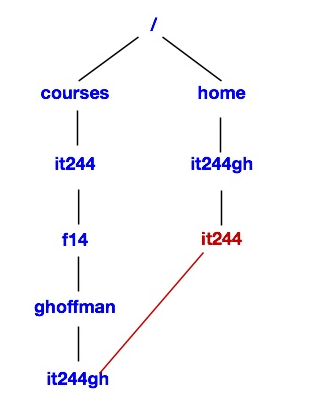

IT 244: Introduction to Linux/Unix
Class 10
Today's Topics
Tips and Examples
Review
New Material
Reading Assignment
The reading assignment for this week is chapter 4 of Sobell,
The Filesystem.
Homework 5
I have posted homework 5 here.
It is due this coming Sunday at 11:59 PM.
Mid-term
The mid-term exam for this course will be held on Tuesday, October 24th.
It will consist of 25 questions like those on the quizzes.
You will have the entire class period to work on the exam.
60% of the questions will come from the Ungraded Class Quizzes.
The last class before the exam, Thursday, October 19th, will be a review session.
You will only be responsible for the material in the Class Notes for that class
on the exam.
The Mid-term is a closed book exam.
Tips and Examples
Using Pathnames
- If you want to work with a file ...
- you usually go to the directory that contains the file
- When you do this you can use just the name of the file ...
- when you need to run a command on it
- I have some web pages that offer help with Linux
- They are contained in the directory /home/ghoffman/public_html/linux
- One of these files is common_unix_commands.html
- If I wanted to know whether I had mentioned the
finger command on this page ...
- and I were in the directory that held the file ...
- I would simply type
$ grep finger common_unix_commands.html
- If I were in my home directory and didn't want to leave it ...
- I could use a relative pathname
grep finger public_html/linux/common_unix_commands.html
- The file I want to access is below my current directory ...
- so I have to list all the directories between my current directory ...
- and the directory that contains the file
- What if I wanted you to make a copy of this file to practise with?
- Each of you would be in a different directory when you copied the file ...
- so I would give each of you an
absoluted pathname ...
- and you would type
cp /home/ghoffman/public_html/linux/common_unix_commands.html .
Practice with Access Permissions
- You will need to know how to use
chmod to change access permissions ...
- on the mid-term and final exams
- You will get some additional practice with
chmod ...
- in the Class Exercise for this class
- I have also created a web page to give you extra practice with
chmod
- You will find this page here
- The page also has a link to the answers
- There is a link to the
chmod practice page ...
- on the class web page
Review
Access Permissions
- All Unix files and directories have
access permissions
- The access permissions allow the owner of a file or directory ...
- to decide who gets to do what with the file or directory
- By default, the owner of a file or directory ...
- is the user account that created it
- Every file, directory or device on a Unix filesystem has three types of permissions
- Each access permission can either be on or off
- If you have read permission
on a file you can look at the data in the file
- If you only have read permission, you cannot change a file
- To change a file you need write permission
- You cannot run a program or script file ...
- unless you have execute permission on that file
- Each of the three permissions is set either on or off ...
- to three classes of users
- The owner
- The group
- Every other account
- Every file or directory has an owner
- The account that created the file is usually the owner
- A group is a collection of Unix accounts
- A group can only be set up by a system administrator
- Every file or directory is assigned to a group
- The last class of users is everyone else ...
- any account that is not the owner or a member of the group
Viewing Access Permissions
chmod
Using chmod with Numeric Arguments
New Material
The root Account
Setuid and Setgid Permissions
Setting Setuid and Setgid with chmod
Directory Access Permissions
- Unix permissions work a little differently for directories
- Read and write permissions for a directory ...
- are similar to those for a file
- Read permission on a directory ...
- allows you to list the contents using
ls
- So read permission on a directory ...
- only allows you to run
ls on it
- To read the files in the directory ...
- you need read permission for each file
- So read permission on a directory ...
- does not allow you to read the files in that directory
- You need read permission on the file to do that
- Write permission on a directory ...
- allows you to create or delete anything in that directory ...
- and to change the name of anything inside that directory
- But you cannot change the files themselves ...
- unless you have write permission on those files
- Note that write permission on a directory ...
- only apllies to the contents of a directory ...
- not to the dirctory itself
- You cannot change the name of a directory ...
- or delete it
- unless you have write permission on its parent directory
- Execute permission on a directory is very different ...
- from execute permission on a file
- You can't run a directory from the command line ...
- like a program or script
- Execute permission on a directory allows you to do two things
- Enter the directory using
cd
- Run
ls on a file in the directory
if you know its name
- So if you know the name of a file in some directory ...
- and you do not have read access to the directory ...
- but you have execute access ...
- and you know the name of a file ...
- you can run
ls or ls -l on that file
Links

- If you
cd to the link, you will go to the real directory
- If you
cd into this location and use pwd
$ pwd
/home/it244gh
$ cd it244
$ pwd
/home/it244gh/it244
- The path that
pwd prints ...
- is the route you took to get to the current directory
- But it is not the real path to the directory
- You can only get the true location ...
- if you use
pwd with the -P option
$ pwd
/home/it244gh/it244
$ pwd -P
/courses/it244/sum14/ghoffman/it244gh
- You must use a capital P, not a lowercase p
- Unix tries to hide your real location when you use a link ...
- so as not to confuse you
- In this case, we used a link named it244 ...
- inside the home directory of my it244gh account ...
- to get to /courses/it244/sum14/ghoffman/it244gh
- I can get back to where I came from using ..
$ pwd
/home/it244gh/it244
$ cd ..
$ pwd
/home/it244gh
- Why does your home directory have a link to your it244 class directory?
- To make things easier for instructors like me
- If the directory in which you do your course work were in your home directory ...
- I would have to go to many places to collect your assignments
- Instead I only have to go one place ...
- and if I run
ls is see each of your course directories
$ ls
ahmadzaidan enwolny jnouider mohammad stephani
almonte2 etsai001 jswesson natalief subrina
ariley2 ghoffman jwiriadj newton sullivan
bedewy99 GROUP keller01 nholobo test
bghanem hhxxxooo khartman patrick8 thall
bozheng htran18 ktgav piperb1 thill
bradena hung721 ktung pjadik tjo02124
bstoker ifiallo litav qleegain vlimage
cribeiro it244gh maher rehmank wwong89
deng5 jason123 MAIL rhalhass ymao
dhorard jflores mfdal rtamw zfritz
diemtr jnewman mlebrun7 sayaz ziliang
- The it244 link in your home directory ...
- points to your course directory in /courses/it244/f14/ghoffman
- The name of your course directory is your Unix username
The Two Types of Links
- There are two types of links
- Hard links
- Symbolic, or soft, links
- Hard links are older
- But they are seldom used these days
- A hard link is like a duplicate file name
- If you have a hard link to a file ...
- and the original filename is deleted ...
- the file will still be there
- The file will remain until the last hard link is removed
- Hard links have some disadvantages
- Hard links can only point to files, not directories
- Our Unix filesystem appears to be a single hierarchy
- In reality it is a collection of different file systems ...
- on different hard disc volumes
- The different file systems are stitched together ...
- so they look like a single system
- Unix hides this fact from users
- But this causes problems for hard links
- You can only have a hard link to a file in the same volume ...
- as the link you are creating
- That means you can't link to a file on a different disk or partition
- Symbolic links are much more flexible
- Symbolic links are sometimes called soft links
- You can use either an absolute or relative pathname
- when creating a symbolic link
- A symbolic link can point to a file or directory ...
- on any disk or partition
- Deleting a soft link does not delete the file or directory it points to
- You can delete a file or directory that has a soft link pointing to it ...
- without deleting the link
- The symbolic link remains ...
- but it points to nothing
ln
Removing a Link
- To delete a link, use
rm
- This will work whether the link points to a file or a directory
- If you delete a symbolic link ...
- it will not affect the file or directory it points to
- If you delete a hard link ...
- you will not delete the file ...
- unless the link is the last connection to the file
Attendance
Class Quiz